Расписание — один из самых востребованных разделов LMS. Студенты открывают его каждый день, чтобы узнать, когда и где проходят занятия.
Я проектировала сервис с нуля. За три итерации он вырос из простого расписания в полноценный инструмент для студентов и преподавателей: с параллельными группами, поиском, фильтрами, вебинарами и доступом к учебным материалам.
Моя роль: продуктовый дизайнер end-to-end. От исследования потребностей студентов и преподавателей до проектирования сценариев, проверки решений и передачи макетов в разработку.
Итерация 1. создать удобное расписание для студента
Начала с опроса 120 студентов. Хотела понять, как они пользуются расписанием и чего им не хватает.
Выяснилось, что студенты смотрят расписание по-разному: 62,5% предпочитают неделю, 13,3% открывают только сегодняшний день, а 21,7% выбирают режим в зависимости от ситуации. При этом 32,5% заходят в расписание именно ради сегодняшних занятий, а 20% открывали его ради ссылки на онлайн-занятие — в первой итерации этот сценарий не взяли в работу.
В открытых ответах обнаружилась ещё одна проблема: занятия визуально сливались, и студентам было сложно отличить лекцию от лабораторной.
Я также изучила решения СПбГУ, ВШЭ, Moodle, Google Calendar и зарубежных университетов. В качестве ориентиров выбрала недельный просмотр, быстрый переход к нужной дате и компактные карточки занятий.
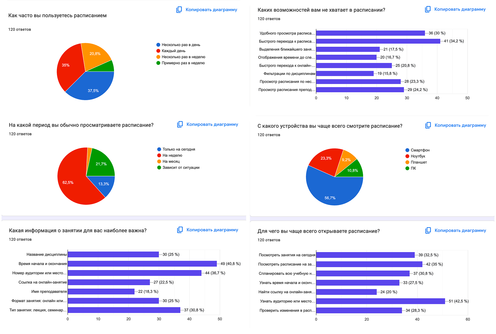
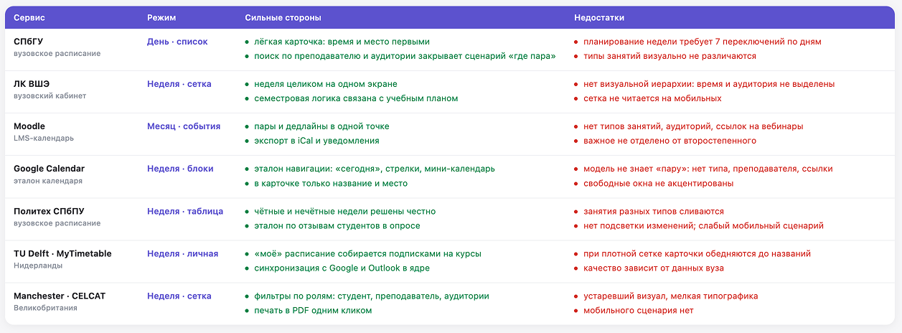
Гипотезы
💡 Если вынести расписание на сегодня в отдельный блок, студент сможет быстро посмотреть план дня.
💡 Если добавить календарь с переходом к любой дате, не придётся листать расписание вручную.
💡 Если различать занятия цветом, их будет проще находить с первого взгляда.
Что спроектировала
Два режима просмотра: лента и сетка.
Карточки с временем, дисциплиной, типом занятия и аудиторией.
Цветовое обозначение типов занятий.
Мини-календарь для перехода к нужной дате.
Отдельный блок «Расписание на сегодня».
Челлендж
Цветовая система: нужно было различать типы занятий, не перегружая интерфейс.
Короткие занятия: должны оставаться заметными на временной сетке.
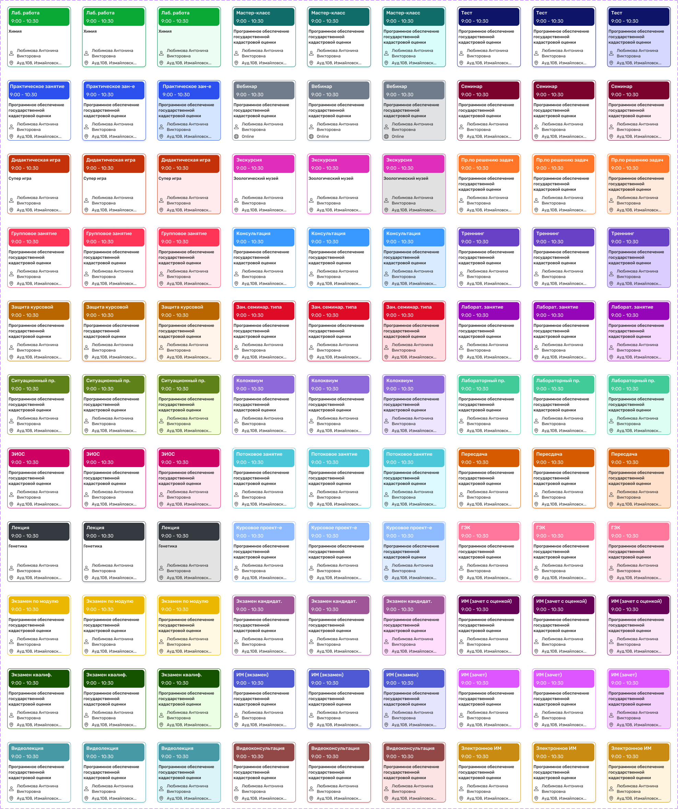
Результат
Вместо поиска информации в таблицах и чатах студент получил единое расписание в личном кабинете. Теперь можно быстро посмотреть занятия на сегодня, оценить всю неделю или перейти к конкретной дате.
После запуска я продолжила собирать обратную связь через поддержку, кураторов и чаты. Студенты стали делиться скриншотами расписания из личного кабинета вместо пересылки таблиц. Блок «Расписание на сегодня» стал частым способом открыть расписание. Также перестали встречаться повторные жалобы на сливающиеся карточки занятий.
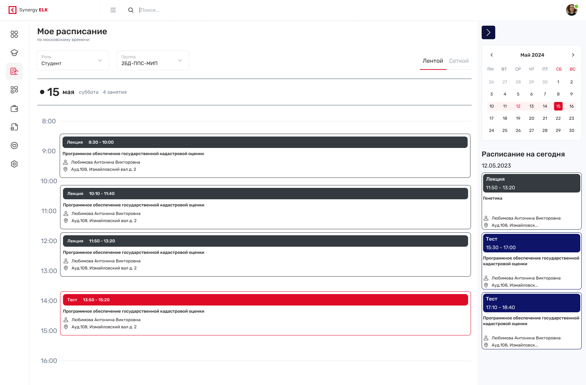
Дневной режим отображения. Справа названия на сегодня и календарь
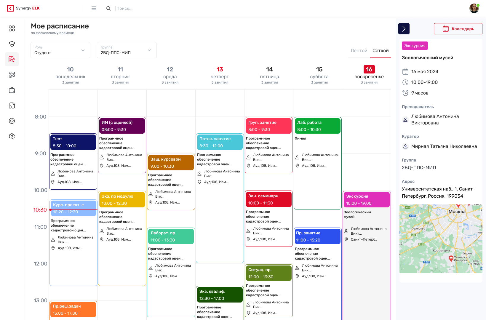
Недельный режим отображения и информация по занятию
Итерация 2. объединить расписания нескольких групп и добавить преподавателей
Бизнес-задачи
Добавить расписание для преподавателей. Преподавателям нужен отдельный сценарий работы с расписанием: видеть свои занятия, аудитории и консультации.
Обновить визуальный стиль сервиса. После обновления сайта университета и брендбука расписание нужно было привести к новой дизайн-системе.
От студентов по обратной связи
Названия режимов не помогали ориентироваться. «Лента» и «Сетка» описывали внешний вид, но не объясняли, что пользователь увидит внутри. Студенты регулярно спрашивали у поддержки и кураторов, как открыть расписание на неделю и что означает «лента». Это показало, что режимы нужно назвать понятнее.
В плотном расписании сложно найти нужную дисциплину. Студенты просили добавить поиск и фильтры, чтобы не просматривать всю неделю в поисках конкретной пары. Такие запросы поступали через кураторов и в групповые чаты.
Не хватало информации о времени до следующей пары. Студентам хотелось видеть не только время начала занятия, но и сколько осталось до него. Такой запрос отметили 16,7% участников опроса.
Расписание нужно было смотреть сразу для нескольких групп. Это оказался один из главных инсайтов итерации. Многие студенты учились в нескольких группах параллельно, но могли просматривать расписание только по одной группе за раз. Старосты и кураторы регулярно спрашивали, когда занятия у другой группы и как сопоставить два расписания. Студентам приходилось переключаться между группами и сравнивать их вручную. Появилась потребность выбрать несколько групп и увидеть их расписание на одной неделе.
Студентам нужно было находить свободные окна. В чатах и опросе появлялись просьбы показать промежутки между занятиями, чтобы понимать, когда неделя свободна и как планировать личное время.
Гипотезы
💡 Если переименовать «Ленту» и «Сетку» в «День» и «Неделю», студентам будет проще ориентироваться.
💡 Если добавить поиск и фильтры, нужную дисциплину будет проще найти.
💡 Если сделать переключение ролей, один сервис сможет закрыть сценарии студентов и преподавателей.
💡 Если объединить несколько групп в одной сетке, студентам не придётся вручную сверять расписания.
💡 Если показывать свободные окна и время до следующего занятия, пользователям будет проще планировать время.
Решение
Во второй итерации добавила несколько важных возможностей, которые расширили сценарии работы с расписанием.
Основные изменения:
Несколько групп в одном расписании. Студент может выбрать сразу несколько групп и увидеть все занятия в общей недельной сетке. Больше не нужно переключаться между группами и сравнивать расписания вручную.
Расписание для преподавателей. Добавила переключение между ролями студента и преподавателя. Преподаватели могут смотреть своё расписание и расписание любой группы.
Поиск и фильтры. Добавила поиск по дисциплинам и фильтры, чтобы быстрее находить нужные занятия.
Поиск свободных окон. Добавила отдельную кнопку, которая помогает найти свободные промежутки в расписании без ручного сравнения занятий.
Дополнительные улучшения:
Переименовала режимы «Лента» и «Сетка» в более понятные «День» и «Неделя».
Добавила карточку «Скоро начало» в правый сайдбар. Она показывает следующее занятие на сегодня и обратный отсчёт до его начала.
При проектировании общей сетки отдельно продумала отображение занятий из разных групп, которые проходят одновременно. Нужно было показать все занятия так, чтобы карточки не сливались и оставались читаемыми.
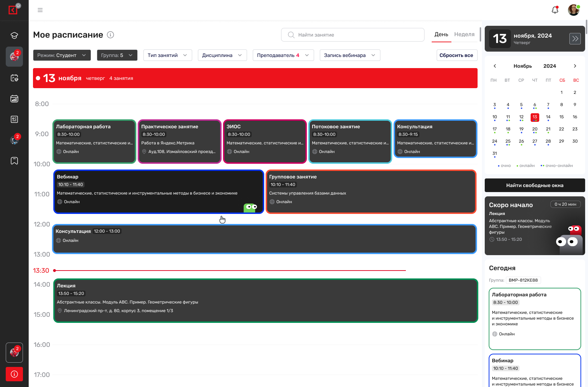
Просмотр студентом расписания по нескольким группам
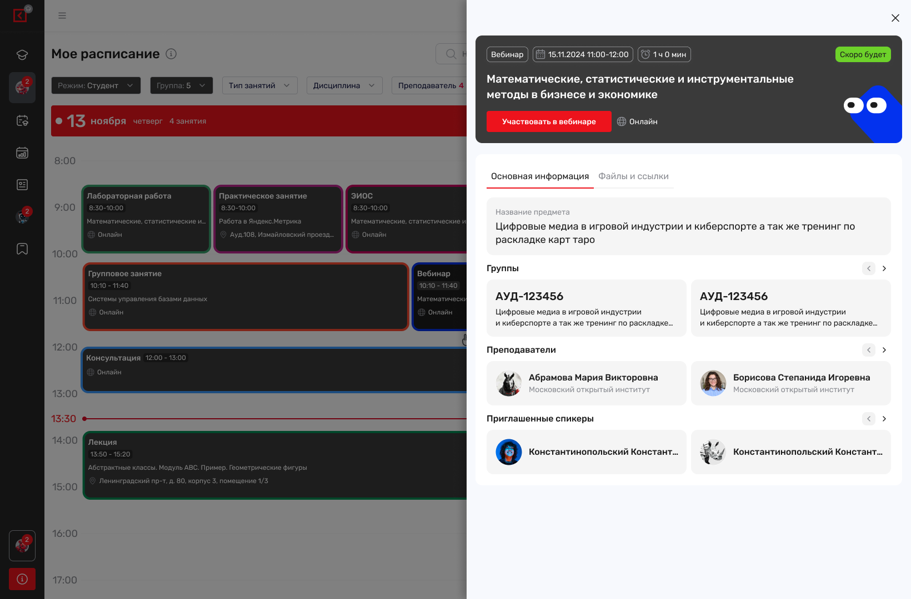
Просмотр информации по онлайн занятию
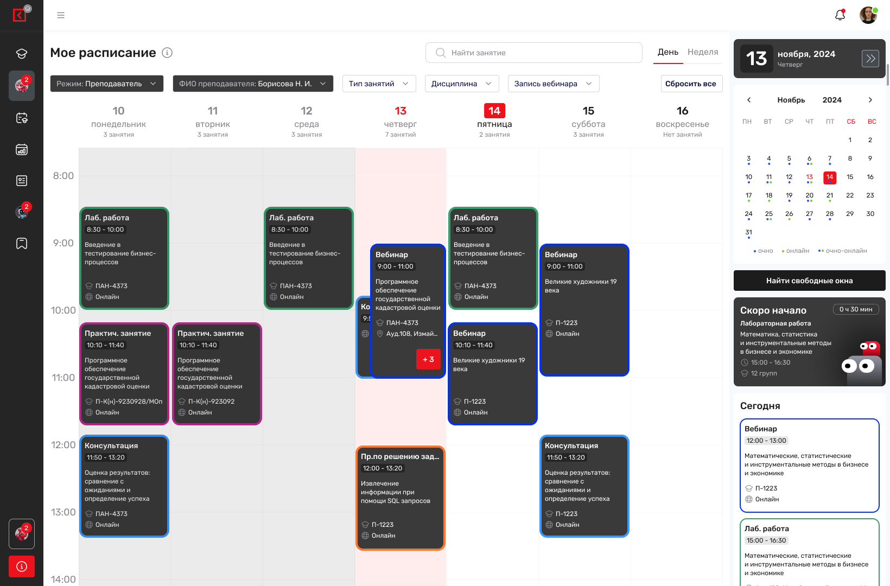
Расписание преподавателя. Подсветка возможных накладок занятий.
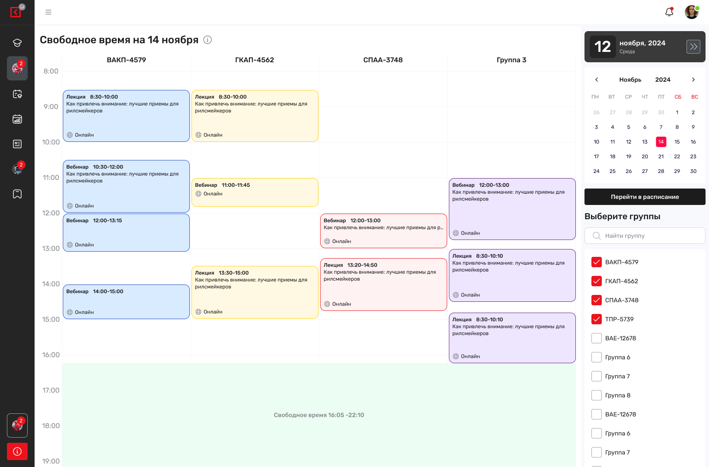
Функция поиска свободного времени
Что изменилось
Вместо отдельных расписаний студент получил общую картину учебной недели. Теперь не нужно переключаться между группами и самостоятельно сверять время занятий. Преподаватели получили собственное расписание в личном кабинете вместо таблиц от методистов.
После запуска перестали повторяться вопросы о том, что такое «лента» и как посмотреть расписание на неделю. Поиск помог находить нужные дисциплины без просмотра всей сетки. Студенты с несколькими группами получили возможность сверять занятия на одном экране.
Итерация 3. связать расписание с учебным процессом
На третьей итерации я провела короткие интервью с пятью студентами и тремя преподавателями. Каждая беседа длилась 20–30 минут и проходила с демонстрацией текущего интерфейса. Мне было важно понять, какие задачи расписание пока не закрывает в повседневном использовании.
Выяснилось, что карточки занятий сложно быстро считывать: названия дисциплин теряются, а тип занятия перетягивает на себя слишком много внимания. При этом для студента главное — сразу понять, какая дисциплина и во сколько.
Обнаружились и новые сценарии использования:
Офлайн-доступ для преподавателей. Преподаватели перемещаются между кампусами и аудиториями, где интернет может быть нестабильным. Им нужна возможность скачать расписание и пользоваться им без подключения к сети.
Доступ к онлайн-занятиям. По результатам первого опроса (120 студентов) 20% открывали расписание ради ссылки на онлайн-занятие. В первой итерации этот сценарий не взяли в работу, но позже он вернулся в приоритеты. Это показало, что расписание уже стало для них точкой входа в онлайн-обучение.
Доступ к записям вебинаров. Если студент пропускал онлайн-занятие, запись приходилось искать в групповых чатах или спрашивать у одногруппников. Расписание могло стать удобным местом для доступа к материалам пропущенного занятия.
Новые типы занятий. По мере развития образовательных программ появлялись новые форматы занятий. Их нужно было добавить в существующую систему отображения, сохранив единый принцип оформления карточек.
Гипотезы
💡 Если выделить название дисциплины и время, студент быстрее поймёт, какое занятие его ждёт.
💡 Если добавить выгрузку в Excel, преподаватели смогут пользоваться расписанием без интернета.
💡 Если связать записи вебинаров с занятиями, студент сможет вернуться к пропущенному материалу без поиска в чатах.
💡 Если расширить существующую систему типов занятий, расписание сможет поддерживать новые форматы обучения.
Результат
Обновила карточку занятия. Сделала название дисциплины и время заметнее, а тип занятия менее акцентным. Теперь главное в карточке проще найти взглядом.
Добавила новые типы занятий. Расширила список типов, сохранив единый стиль их отображения.
Добавила выгрузку расписания в Excel. Теперь преподаватели могут скачать расписание и пользоваться им без интернета.
Добавила ссылки на вебинары и записи. Студенты могут перейти к онлайн-занятию или посмотреть запись прямо из расписания.
После этих изменений расписание стало не просто местом, где можно посмотреть время занятий. Теперь из него можно сразу перейти к вебинару или записи, не нужно искать ссылки в чатах. Преподаватели могут скачать расписание и пользоваться им офлайн.
После запуска я продолжила собирать обратную связь через поддержку и чаты, а также смотреть статистику использования. Вопросы о том, где найти ссылку на вебинар, практически перестали появляться. Количество скачиваний Excel растёт в начале каждого семестра. Также больше не встречались жалобы на то, что названия дисциплин сложно прочитать.
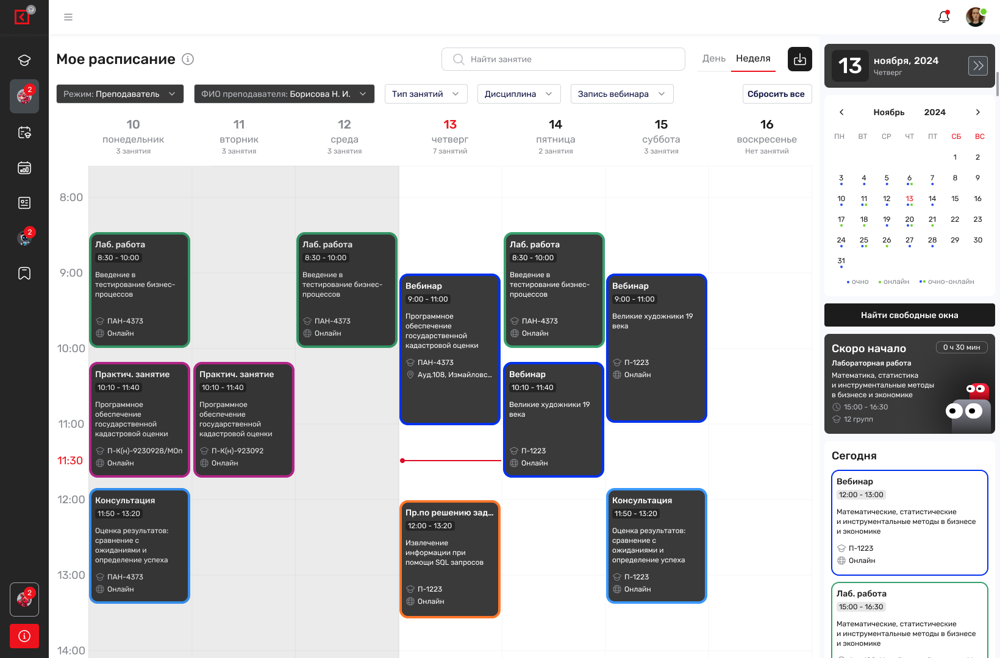
Расписание
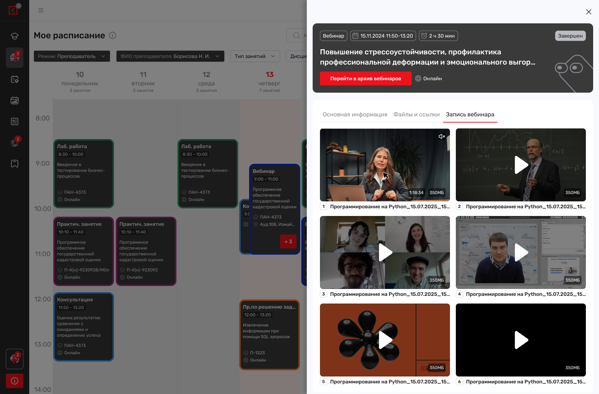
Просмотр записи вебинаров
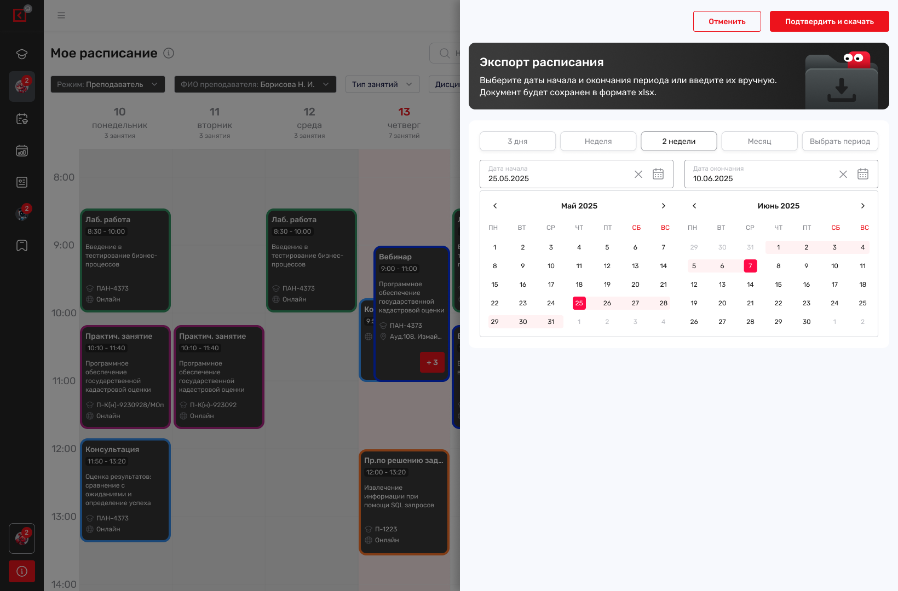
Скачивание расписания
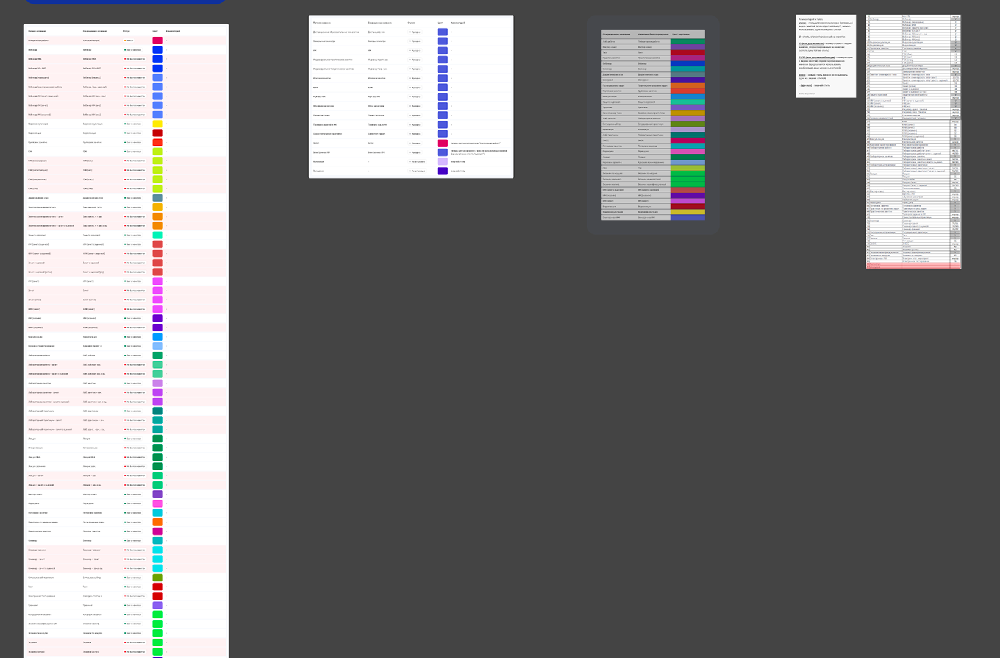
Подбор цвета по занятиям
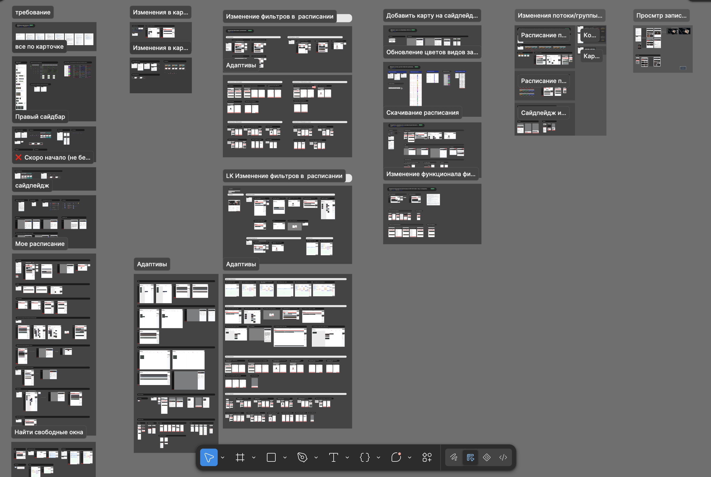
Расписание: итоговый вид
Итог
100 тыс+
пользователей работают с расписанием в месяц
−70%
обращений в поддержку по вопросам расписания в месяц
12 000
переходов из расписания в онлайн-занятия в месяц
За три итерации расписание выросло из инструмента для просмотра занятий одной группы в единый сервис для студентов и преподавателей.
Студенты получили возможность планировать неделю сразу по нескольким группам, искать нужные занятия и свободные окна. Преподаватели могут работать со своим расписанием и расписанием групп. Позже в расписании появились ссылки на онлайн-занятия и записи, а также возможность выгружать расписание в Excel.
В итоге расписание стало не просто способом узнать время следующей пары, а одной из основных точек входа в учебный процесс.